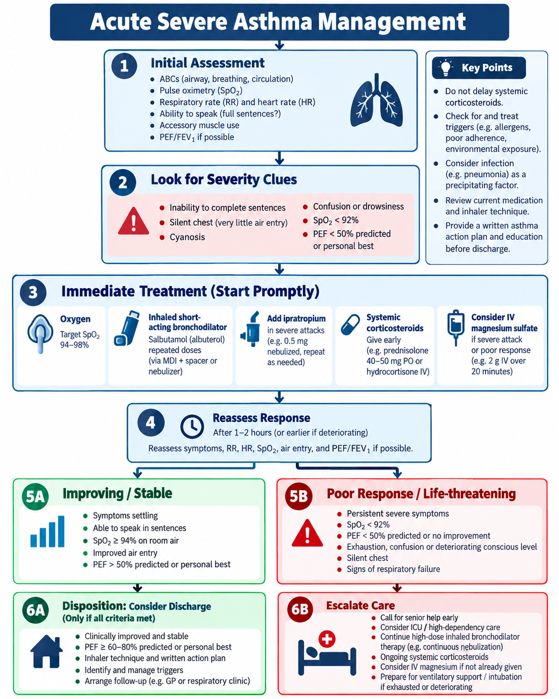
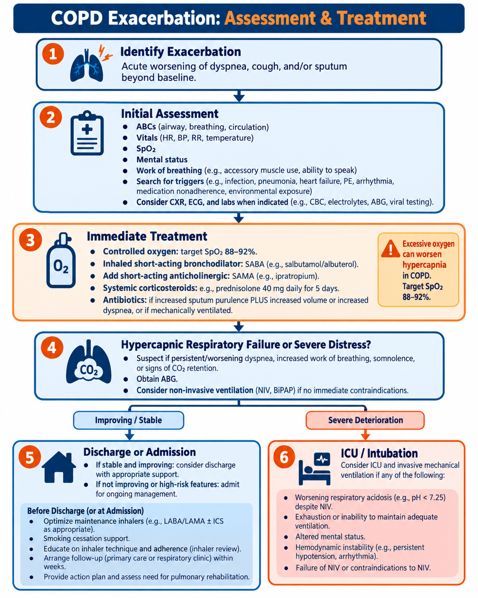
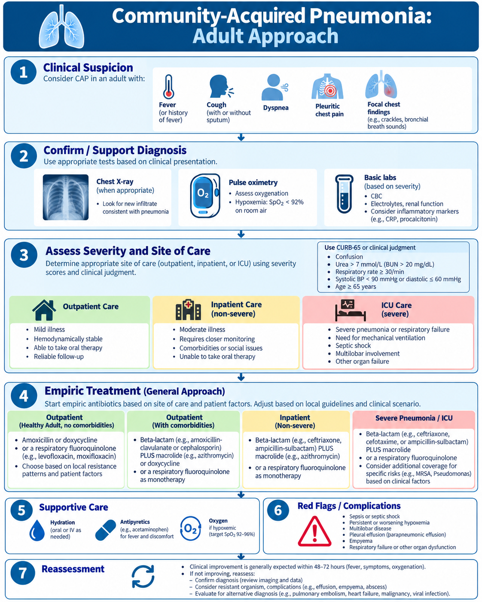
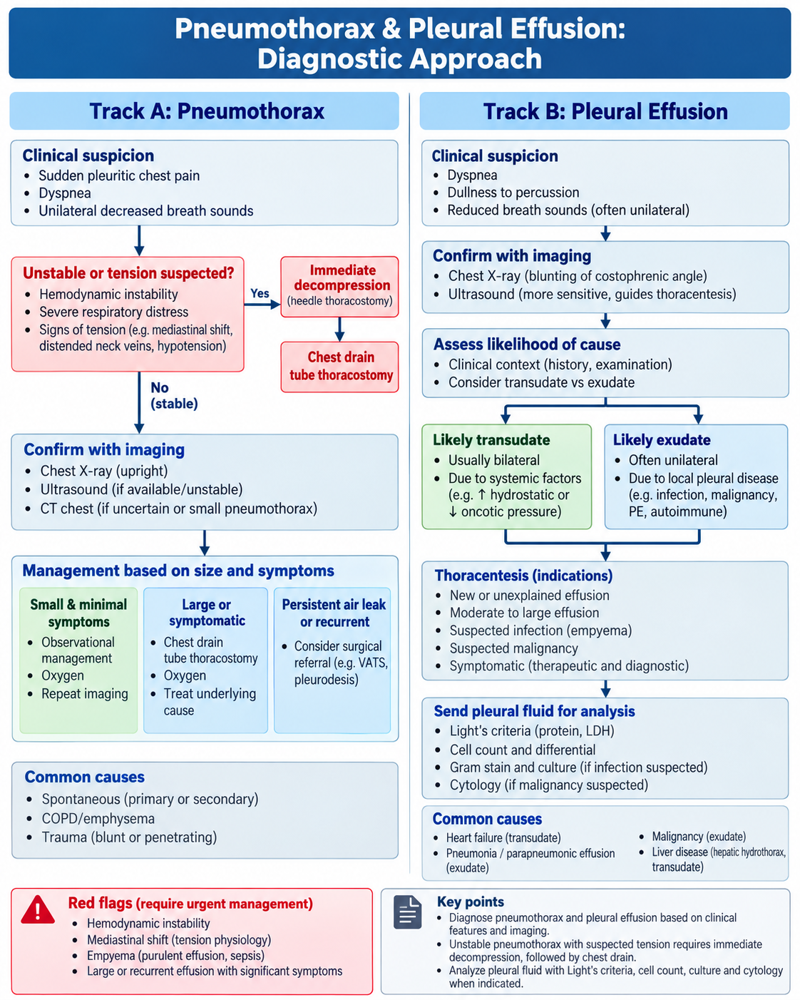

🫁 Asthma, COPD, Pneumonia & Respiratory Failure
Deep guideline-based respiratory medicine with clinical pattern recognition, emergency management, approved visuals and physician-level questions.
80 questions
1. Asthma Diagnosis, Control & Stepwise Therapy
Confirm variable airflow limitation, assess control and use ICS-containing treatment.
Definition & classic presentation
Asthma is a heterogeneous disease characterized by variable respiratory symptoms and variable expiratory airflow limitation. Typical symptoms are episodic wheeze, dyspnea, chest tightness and cough that vary over time and intensity, often worsening at night/early morning or with exercise, allergens, viral infection or irritants.
Confirm the diagnosis objectively when possible
- Spirometry may show obstruction with reduced FEV₁/FVC.
- Bronchodilator responsiveness supporting asthma in adults: increase in FEV₁ or FVC by ≥12% and ≥200 mL.
- If spirometry is normal, repeat when symptomatic or use alternative objective testing such as serial peak-flow variability or bronchial challenge when appropriate.
- Confirm before long-term controller therapy when feasible because diagnosis is harder after treatment begins.
Control assessment
Ask about the previous 4 weeks: daytime symptoms, night waking, reliever use and activity limitation. Separately assess future risk: prior severe exacerbations, SABA overuse, low lung function, smoking, poor adherence/technique and relevant comorbidities.
Before stepping up
- Check diagnosis.
- Check inhaler technique and adherence.
- Address smoking/vaping, allergen/occupational exposure and comorbid rhinitis, obesity, GERD, anxiety/depression or OSA.
🔥 GINA 2026 treatment principle
SABA-only treatment is not recommended. Adults and adolescents should receive an ICS-containing reliever strategy. GINA Track 1 is preferred: low-dose ICS-formoterol as the reliever at all steps.
Stepwise therapy — adults/adolescents
- Steps 1–2: as-needed low-dose ICS-formoterol (preferred Track 1).
- Step 3: low-dose maintenance ICS-formoterol + the same inhaler as reliever (MART).
- Step 4: medium-dose MART in appropriate patients.
- Step 5: specialist phenotyping and add-on therapy such as LAMA or biologics depending on phenotype.
Alternative Track 2 regimens can be used when Track 1 is unavailable/inappropriate, but the patient should still receive ICS-containing therapy.
Stepping down
Once control has been maintained for about 2–3 months, consider a gradual step-down to the minimum effective treatment. Do not completely stop ICS in adults/adolescents unless needed temporarily to confirm the diagnosis.
High-yield traps
- Frequent SABA use signals poor control and increased risk.
- A normal examination between attacks does not exclude asthma.
- Persistent symptoms despite “stronger” therapy may be poor technique/adherence rather than refractory disease.
- Severity is defined retrospectively by the treatment intensity needed to maintain control—not by one bad day.
📊 Asthma: Diagnosis, Control & Stepwise Therapy
Approved Day 4 infographic
2. Acute Severe Asthma Management
Recognize severity early, treat immediately, reassess repeatedly.
Initial assessment
- ABCDE, respiratory rate, pulse, SpO₂, ability to speak, accessory-muscle use and mental status.
- PEF/FEV₁ if feasible and it does not delay treatment.
- Look for a trigger, but do not delay bronchodilator/corticosteroid treatment while searching.
🔥 Life-threatening clues
- Silent chest / minimal air entry
- Exhaustion, confusion or drowsiness
- Cyanosis or significant hypoxemia
- PEF <50% predicted/personal best with severe symptoms
- Normalizing or rising PaCO₂ in a severely distressed asthmatic is ominous because early attacks usually cause hypocapnia.
Immediate therapy
- Repeated inhaled SABA via pMDI + spacer or nebulizer.
- Add ipratropium for severe attacks.
- Give systemic corticosteroids early.
- Oxygen titrated to an adult target around 93–95% in current GINA guidance.
💊 Key adult steroid dose
40–50 mg daily for 5–7 daysFollow local formulary/protocol and individual contraindications.
IV magnesium
Consider IV magnesium sulfate in severe/life-threatening exacerbation or poor response to initial intensive treatment. A commonly used adult dose is 2 g IV over ~20 min.
What not to do routinely
- No sedatives.
- No routine antibiotics unless bacterial infection is suspected.
- No routine mucolytics or chest physiotherapy.
- Do not delay escalation for repeated tests in a deteriorating patient.
Escalation / impending respiratory failure
Senior/ICU help early if worsening hypoxemia, exhaustion, altered consciousness, silent chest or rising CO₂. Intubation is high risk in asthma; use an experienced airway team and ventilatory strategy that allows prolonged expiration and avoids dynamic hyperinflation.
Discharge essentials
- Clinical improvement and acceptable lung function.
- ICS-containing controller/reliever plan.
- Check inhaler technique and adherence.
- Written action plan and timely follow-up.
🧭 Acute Severe Asthma Management Algorithm
Approved Day 4 algorithm
3. COPD Diagnosis & Stable Management
Persistent airflow obstruction, symptom burden and exacerbation prevention.
Think COPD when
Progressive dyspnea, chronic cough/sputum or recurrent lower-respiratory events occur in a patient with tobacco exposure, biomass fuel exposure, occupational dust/fume exposure, impaired lung development or other relevant risk.
Diagnosis requires spirometry
Persistent post-bronchodilator airflow obstruction is confirmed by FEV₁/FVC <0.70 in the appropriate clinical context. If the ratio is borderline, repeat testing can help avoid misclassification.
Assess after diagnosis
- Symptom burden: CAT or mMRC.
- Exacerbation history in the prior year.
- Blood eosinophils when considering ICS benefit.
- Smoking status, inhaler technique, adherence, comorbid cardiovascular disease, osteoporosis, anxiety/depression, lung cancer risk and OSA.
Non-pharmacologic treatment
- Smoking cessation is the highest-impact intervention.
- Vaccination: influenza, pneumococcal, COVID-19 and other indicated vaccines including RSV according to age/risk/local policy.
- Pulmonary rehabilitation for appropriate symptomatic patients, especially after exacerbation.
- Physical activity, nutrition, inhaler education and occupational-exposure reduction.
2026 pharmacologic framework
Bronchodilators remain central. Initial/follow-up therapy depends on symptoms and exacerbation risk. Dual bronchodilation with LABA + LAMA is commonly favored when symptoms persist or exacerbation risk is significant.
When does ICS help?
ICS is not a universal COPD drug. Benefit is greatest in patients with exacerbations plus an eosinophilic phenotype and in those with concomitant asthma. ICS increases pneumonia risk in susceptible patients.
Long-term oxygen therapy
LTOT improves survival in appropriately selected patients with chronic severe resting hypoxemia, not simply because the patient is dyspneic. Classic criteria include PaO₂ ≤55 mmHg or SaO₂ ≤88%, with selected higher values when cor pulmonale/pulmonary hypertension/polycythemia is present.
2026 GOLD pearl
GOLD 2026 lowered the exacerbation threshold used to define higher future risk: even one moderate or severe exacerbation in the prior year is now important when selecting/escalating maintenance therapy.
📊 COPD: Diagnosis & Stable Management
Approved Day 4 infographic
4. COPD Exacerbation
Controlled oxygen, bronchodilation, short steroid course and ventilatory support when needed.
Definition & first assessment
Acute worsening of dyspnea and/or cough/sputum beyond usual day-to-day variation. Assess ABCs, respiratory effort, mental status, SpO₂ and triggers such as infection, pneumonia, PE, HF, arrhythmia or medication nonadherence.
🔥 Controlled oxygen
If the patient has known COPD or is at risk of hypercapnic respiratory failure, target SpO₂ 88–92% pending blood gases. Excessive oxygen can worsen hypercapnia/acidosis in susceptible patients.
Immediate treatment
- SABA ± short-acting antimuscarinic bronchodilator.
- Systemic corticosteroid.
- Antibiotics when bacterial features are present, particularly increased sputum purulence plus increased volume and/or dyspnea, or when ventilatory support is required.
💊 Steroid pearl
40 mg daily for 5 days is a common GOLD regimen.ABG & non-invasive ventilation
Obtain an ABG when hypercapnia/acidosis is suspected or illness is moderate-severe. NIV (BiPAP) is strongly favored for acute hypercapnic respiratory failure with respiratory acidosis when there is no immediate contraindication.
Consider ICU/intubation when
- Worsening respiratory acidosis despite NIV
- Exhaustion or inability to protect airway
- Hemodynamic instability
- Severe hypoxemia despite support
- NIV failure or contraindication
Before discharge
- Optimize maintenance inhalers according to symptoms/exacerbation phenotype.
- Check inhaler technique and adherence.
- Smoking cessation and vaccination.
- Consider pulmonary rehabilitation and early follow-up.
Trap
Not every COPD patient with dyspnea has an exacerbation. Pneumonia, PE, pneumothorax, HF and arrhythmia commonly mimic or precipitate deterioration.
🧭 COPD Exacerbation: Assessment & Treatment
Approved Day 4 algorithm
5. Community-Acquired Pneumonia
Confirm pneumonia, determine severity/site of care and choose empiric therapy by risk.
Presentation
Fever or hypothermia, cough ± sputum, dyspnea, pleuritic chest pain, focal crackles or bronchial breath sounds. Older adults may present with confusion, weakness or functional decline.
Diagnosis
A compatible clinical syndrome plus a new infiltrate on chest imaging supports CAP. Pulse oximetry is essential; obtain labs/microbiology selectively according to severity and treatment setting.
Severity & site of care
- Use clinical judgment plus a validated prediction tool such as PSI (preferred in ATS/IDSA) or CURB-65 as a practical severity screen.
- ICU-level concern: respiratory failure requiring ventilation, septic shock requiring vasopressors or multiple severe-CAP criteria.
CURB-65 reminder
Confusion, Urea/BUN elevation, RR ≥30, low BP, age ≥65. It supports—not replaces—clinical judgment.
Empiric treatment concept
Regimen depends on outpatient vs inpatient care, comorbidities, allergy, local resistance and MRSA/Pseudomonas risk. Common outpatient options include amoxicillin or doxycycline for otherwise healthy adults; patients with comorbidities generally need broader combination therapy or an appropriate respiratory fluoroquinolone.
Inpatient non-severe CAP
A common approach is a beta-lactam plus macrolide, or a respiratory fluoroquinolone when appropriate. Severe CAP typically requires a beta-lactam plus macrolide or fluoroquinolone, with additional MRSA/Pseudomonas coverage only when validated risk factors exist.
Antibiotic stewardship traps
- Do not routinely add MRSA/Pseudomonas coverage without risk factors.
- Procalcitonin should not be used to withhold initial antibiotics when radiographic CAP is clinically suspected.
- Routine steroids are not recommended for non-severe CAP; use is context-specific (e.g., refractory septic shock).
Reassess at 48–72 hours
If not improving, reconsider diagnosis, resistant organism, empyema/effusion, abscess, PE, HF, malignancy or immunocompromise. Clinical stability guides antibiotic duration and discharge.
🧭 Community-Acquired Pneumonia: Adult Approach
Approved Day 4 algorithm
6. Pneumothorax & Pleural Effusion
Know what must be decompressed now and what needs fluid analysis.
Pneumothorax
Sudden pleuritic chest pain and dyspnea with unilateral reduced breath sounds. Ultrasound can rapidly support diagnosis; CXR is common in stable patients. Management depends on physiology, symptoms, size, underlying lung disease and recurrence risk.
🔥 Tension pneumothorax
Severe respiratory distress or shock with clinical tension physiology → immediate decompression. Do not delay life-saving decompression for CT or a routine chest X-ray in an unstable patient.
Stable spontaneous pneumothorax
Selected minimally symptomatic patients can be managed conservatively depending on the specific guideline pathway; others require aspiration or chest drainage. Persistent air leak or recurrence may require thoracic-surgery assessment/pleurodesis.
Recurrence pearl
Current BTS guidance supports considering elective surgery after a second ipsilateral or first contralateral pneumothorax and earlier when recurrence prevention is especially important.
Pleural effusion
Dyspnea, dullness to percussion and decreased breath sounds. Ultrasound is more sensitive than CXR and should guide thoracentesis when feasible.
Transudate vs exudate
Use Light's criteria. An effusion is exudative if any of the following are present:
- Pleural/serum protein ratio >0.5
- Pleural/serum LDH ratio >0.6
- Pleural LDH >2/3 the upper limit of normal serum LDH
Complicated parapneumonic effusion / empyema
Pus, positive culture/Gram stain, low pleural pH or clinical/radiologic evidence of pleural infection should trigger antibiotics plus drainage consideration rather than repeated observation alone.
Common causes
Transudates: HF, cirrhosis, nephrotic states. Exudates: infection, malignancy, PE, TB and inflammatory disease.
🧭 Pneumothorax & Pleural Effusion Diagnostic Approach
Approved Day 4 algorithm
7. Obstructive Sleep Apnea
Recognize the phenotype, confirm objectively and reduce cardiovascular/daytime risk.
Classic clues
- Loud habitual snoring
- Witnessed apneas/gasping
- Unrefreshing sleep and morning headache
- Excessive daytime sleepiness, impaired concentration
- Resistant hypertension, AF, obesity
Risk factors
Obesity/large neck circumference, male sex, craniofacial narrowing, adenotonsillar enlargement, alcohol/sedatives and selected endocrine disorders such as hypothyroidism increase risk.
Diagnosis
Diagnosis requires objective sleep testing. Polysomnography is the standard; home sleep apnea testing is appropriate in selected uncomplicated adults with a high pre-test probability.
AHI severity
| AHI | Classification |
|---|---|
| <5/h | Normal |
| 5–14.9/h | Mild OSA |
| 15–29.9/h | Moderate OSA |
| ≥30/h | Severe OSA |
Treatment
- Weight reduction when appropriate.
- Avoid excess alcohol/sedatives near bedtime.
- CPAP/PAP is first-line for many symptomatic patients, particularly moderate-severe OSA.
- Mandibular advancement devices can be used in selected mild-moderate OSA or CPAP-intolerant patients.
- Positional therapy may help positional OSA.
Complications
Hypertension, atrial fibrillation, stroke/CVD risk, insulin resistance, occupational/motor-vehicle accidents and impaired quality of life.
Safety red flag
Excessive daytime sleepiness with near-miss crashes or impaired driving should trigger explicit driving-safety counseling while treatment is being established.
Diagnostic trap
Do not diagnose OSA from a questionnaire alone. STOP-BANG is a screening tool; objective testing confirms the disorder.
📊 Obstructive Sleep Apnea: High-Yield Review
Approved Day 4 infographic
8. Respiratory Failure, Oxygen Therapy & ABG Link
Identify the gas-exchange problem, target oxygen correctly and know when ventilation is failing.
Type 1 vs Type 2 respiratory failure
- Type 1 (hypoxemic): low PaO₂, often <60 mmHg, without primary CO₂ retention. Causes: pneumonia, ARDS, pulmonary edema, PE, severe asthma.
- Type 2 (hypercapnic): elevated PaCO₂ from alveolar hypoventilation; acute failure produces respiratory acidosis. Causes: COPD exacerbation, CNS depression, neuromuscular/chest-wall disease and severe fatigue.
Normal ABG values
| pH | PaCO₂ | HCO₃⁻ |
|---|---|---|
| 7.35–7.45 | 35–45 mmHg | 22–26 mEq/L |
Fast ABG approach
- Look at pH: acidemia or alkalemia?
- Look at PaCO₂ and HCO₃⁻: which change explains the pH?
- Check whether compensation is appropriate.
- Assess oxygenation and the clinical cause.
Primary patterns
- Respiratory acidosis: ↓pH, ↑PaCO₂
- Respiratory alkalosis: ↑pH, ↓PaCO₂
- Metabolic acidosis: ↓pH, ↓HCO₃⁻
- Metabolic alkalosis: ↑pH, ↑HCO₃⁻
Oxygen targets
Use oxygen as a drug with a target range. For most acutely ill adults, a common target is 94–98%. For COPD or other patients at risk of hypercapnic respiratory failure, target 88–92% pending ABG results.
Escalating respiratory support
Nasal cannula → face/Venturi mask → non-rebreather or high-flow nasal oxygen → non-invasive ventilation in selected patients → intubation/mechanical ventilation when oxygenation or ventilation cannot be maintained.
When NIV is especially useful
- Acute COPD exacerbation with hypercapnic respiratory acidosis
- Selected acute cardiogenic pulmonary edema
It is not a substitute for intubation when the airway is unprotected, the patient is profoundly unstable or NIV is clearly failing.
Red flags for intubation/escalation
- Exhaustion or worsening work of breathing
- Altered mental status / inability to protect airway
- Persistent severe hypoxemia despite support
- Worsening hypercapnic acidosis
- Hemodynamic instability
📊 Respiratory Failure, Oxygen Therapy & ABG Link
Approved Day 4 infographic
🔥 Day 4 Rapid Review
These should become automatic.
Finished Day 4?
Mark complete only after you review all 8 topics and practice questions.